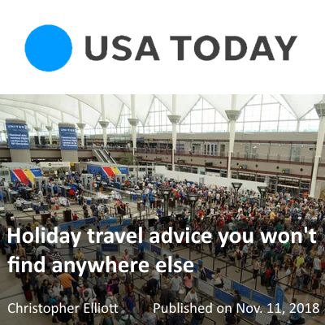

下面是文章摘录。如果想看全文，请点击上面的图片。 Make multiple reservations: Both hotels and car rental companies allow you to make multiple reservations, often for the same day. Clement Zhang, the managing director of FindOptimal, a site that helps travelers save money by exploiting that ability, says that can save you serious money. "Because hotel rates often vary from night to night, you may save hundreds of dollars by breaking one reservation into two or three," he says. "But you'll get the same hotel rooms and the same service."Travel update
双十一登上《USA Today》
寻优网在2018年双十一被美国发行量最大的报纸之一《USA Today》引用！ 下面是文章摘录。如果想看全文，请点击上面的图片。 Make multiple reservations: Both hotels and car rental companies allow you to make multipl